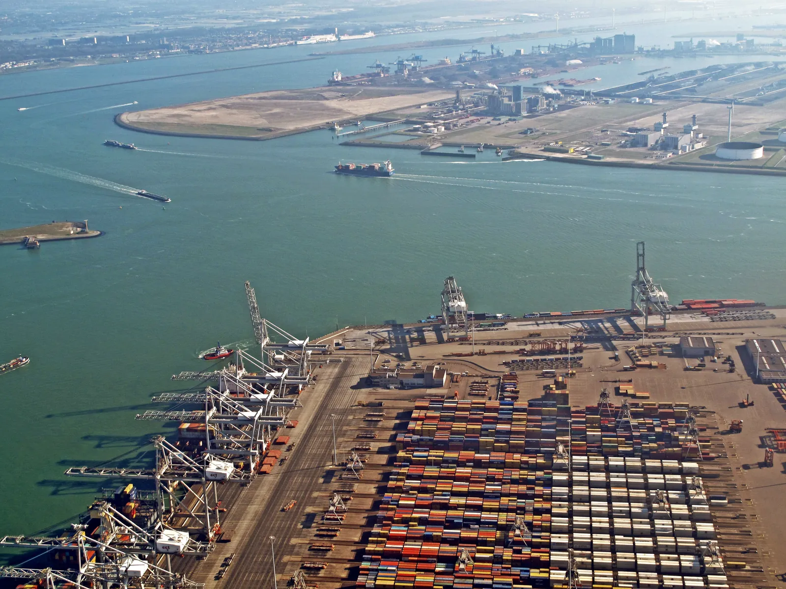
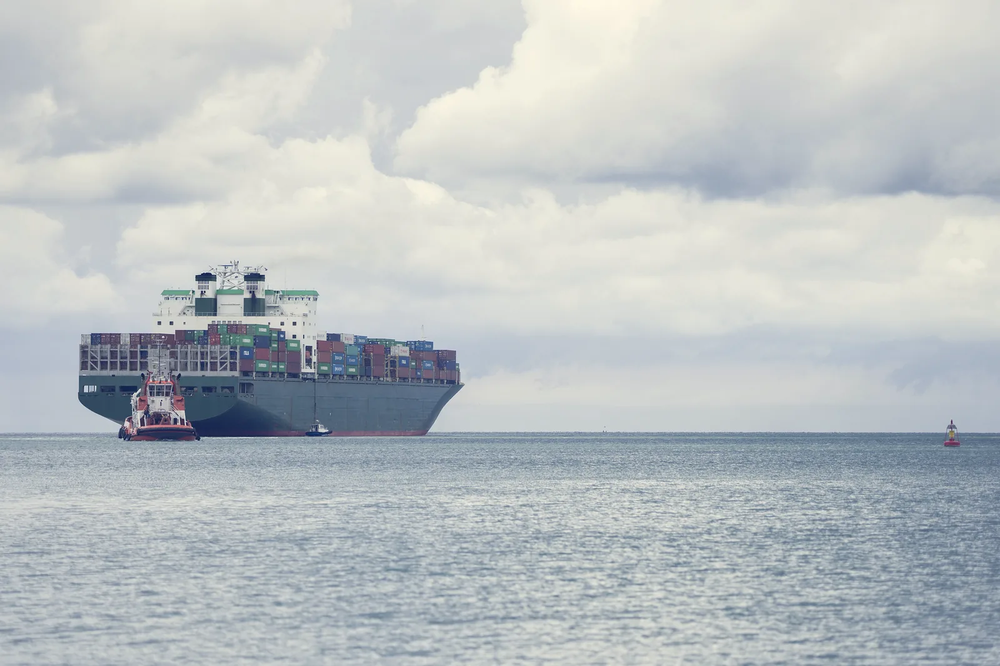

1994'ten beri son nokta.
Gümrük müşavirliğinde otuz yılı aşan bir saha deneyimi; genç beyinler, mevzuat uzmanları ve kesintisiz operasyon.
İKON, 1994 yılında gümrükleme hizmetlerinde uzman ve deneyimli bir kadro tarafından kuruldu. Proaktif ekip çalışması, hızlı ve güvenilir sonuç üretmesi, Türk ekonomisinin seçkin kuruluşlarından oluşan portföyü ve dürüstlük ilkelerine bağlılığıyla bugün sektörün en seçkin kuruluşlarından biri.
Rekabetin yol göstericisi, kalitenin ön koşul, müşterinin ise vazgeçilmez olduğu iş dünyasında belirleyici etken; bireysel kalite, ekip kalitesi ve yönetim kalitesidir. Bu anlayışın sonucu olarak rekabetin taklit edilemeyen tek unsuru, kuruma özgü bilgi ve becerilere sahip çalışanlardır.
TS EN ISO 9001/2000 Kalite Sistem Sertifikasına sahip olan İKON, hizmet sektörünün zorluklarının bilincinde; müşteri temsilciliği esası üzerine kurulu bir anlayışla kaliteli hizmetten taviz vermeden müşteri memnuniyetini ön planda tutar.
Bünyesindeki motorlu kurye servisi ile günün her saati müşterilerinin hizmetindedir; evrak alışverişinde maksimum performans gösterir ve zaman tasarrufu sağlar. Teknolojik yatırımları ve insan kaynaklarıyla çağın yeniliklerini hizmet sektörüne yansıtır.

Kuruluş
Gümrükleme hizmetlerinde uzman ve deneyimli bir kadro tarafından İstanbul'da kuruldu.
Kalite belgesi
TS EN ISO 9001/2000 Kalite Sistem Sertifikası ile hizmet standardı belgelendi.
Dijital geçiş
Gümrük Müsteşarlığı ve bağlı idarelerin modernizasyon projesiyle eş zamanlı olarak EDI'yi kullanan ilk firmalardan biri oldu.
Tam lojistik
Gümrük müşavirliğinden tam bir lojistik çözüm ortağı olmaya doğru adımlar sürüyor; teknoloji ve insan kaynağına yatırımı sürdürüyor.
Türkiye'de en kaliteli ve güvenle hizmet veren gümrükleme firması olmak.
Rekabetin yol göstericisi, kalitenin ön koşul, müşterinin ise vazgeçilmez olduğu iş dünyasında belirleyici etken bireysel kalite, ekip kalitesi ve yönetim kalitesidir.
Sektöründeki en iyilerin çalışmak istediği firma olmak.
Dengeli ve sağlam büyümek; müşterilerin ihtiyaç ve beklentilerini daha kaliteli hizmetle karşılamak; teknolojik altyapıyı etkin ve verimli kullanmak. En büyük önemi insan beynine verir, sürekli insana yatırım yaparız.
Kalite, üç seviyede.
Bireysel kalite
Diplomalı ithalat, ihracat, muhasebe ve müşteri temsilcileri; her dosyada aynı yetkinlik ve aynı özen.
Diploma · DeneyimEkip kalitesi
Yılların tecrübesi ile genç beyinlerin bir arada çalıştığı; dış ticaret ve mevzuat uzmanlarıyla desteklenen bir ekip.
Tecrübe · GençlikYönetim kalitesi
Üst yönetimin yılların deneyimi; proaktif karar alma, şeffaf iletişim ve sürdürülebilir büyüme.
Karar · ŞeffaflıkYılların tecrübesi,
genç beyinler.
Ekibimiz; yılların tecrübesi ve genç beyinlerden oluşur. Dış ticaret ve mevzuat uzmanlarımızla birlikte, tüm gümrüklerde hizmet veririz.
Hüseyin Kurtuluş
Gümrük Müşaviri
Dış ticaret ve gümrük mevzuatıErdal Turuthan
Gümrük Müşaviri
Operasyon ve saha yönetimi
Doğru ekip, doğru sonuç.
Dosyanızı birlikte açalım; süreci baştan sona planlayalım. İKON ekibi bir telefon uzağınızda.